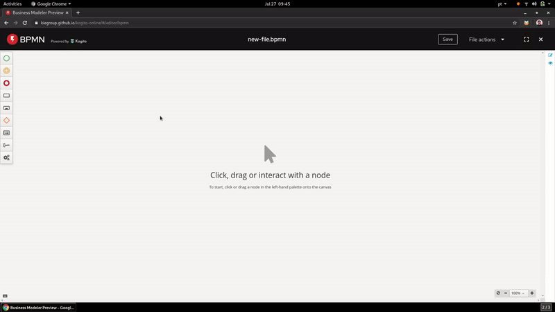
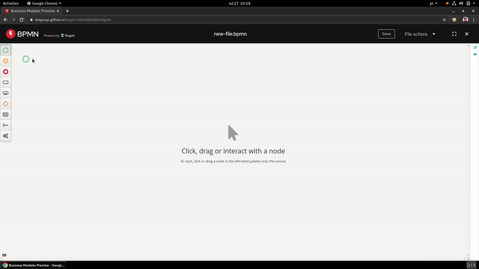

Undo, Redo, ‘is Dirty’ State on all Kogito Tooling channels
We just released some enhancements on the Business Modeler that will allow you to have more control over your work, showing when a file was edited or giving the possibility of undo/redo operations.
The new State Control API is now integrated on the Business Modeler Preview (Desktop and Online) and on our Chrome Extension (check it here), enabling you to be more safe when you make a new edit on your BPMN or DMN diagrams!
The new API tracks when the file was edited, and in combination with improvements on the UI, it helps the user remind to save the current work before exiting the editor.

Remember: If the option “Close without saving” is selected, it’s impossible to retrieve what was edited.
Combined with the Keyboard Shortcut API (you can read more about it here) it’s now possible to undo or redo operations on the editor with the shortcuts ctrl+z and ctrl+shift+z respectively. Making it easy to fix a mistake, or go back to a previous edit.

Thanks to everyone involved and stay tuned for more updates!